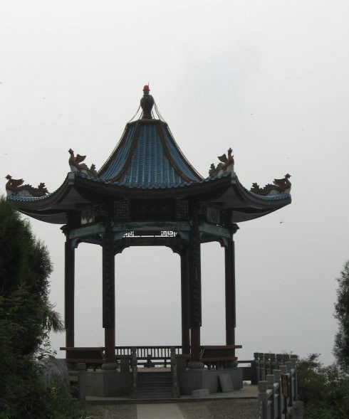

| 达州凤凰山公园，位于达州市城北，因其山势犹如一只展翅的凤凰得名，属山林风景型城市公园，是达州市城区面积最大的城市公园，也是达城人“元九登高节”的主要场所。主要有凤凰楼、凤凰亭、红军亭、送君亭、元稹纪念馆、元稹文化广场、六相广场、巴人文化广场、拜月台、凤仙池、西圣寺以及星级农家乐等景点。园内林木苍翠，园亭相依，楼阁星罗，雕檐画栋，是游客休闲、观光、娱乐、健身，领略佛教文化、六相文化、巴人文化、红军文化和民间民俗文化的佳山宝地。著名诗人梁上泉诗云：“达州原是古通州，山自青青水自流；元九登高怀元九，诗魂常伴凤凰游！” | ||
凤凰楼 |
凤凰山云海 | |
凤凰楼坐落于凤凰山之巅，于2009年2月2日落成，占地面积 9751平方米，由凤凰楼、文化广场、仿古六角亭和艺术回廊构成。凤凰楼共6层，高39米，以元九登高为主题，取意唐代宫灯，寓意太平盛世、国运昌盛。整座楼造型别致、风格独特，以明亮的中华红为主色调，将雕塑艺术和建筑艺术有机结合。仰望凤凰楼，威严的气势震撼人心。上下两层广场的石制栏杆造型各异，上层栏板内侧雕刻着文房四宝，下层栏板雕刻着以元稹为主的唐代著名诗人的诗句。连接上下广场的九条云纹深浮雕与上层栏板外侧的祥云融为一体。六角亭与艺术回廊造型古朴，雕工精美，衬托出凤凰楼的威严、大气与简洁。 后人有作凤凰楼赋聊表情谊 |
||
元稹纪念馆 |
凤凰楼 | |
元稹纪念馆坐落在凤凰山半山腰，面对达城，背靠大山。纪念馆主体建筑为二层仿唐风格，配以2000平方米的广场和青石石梯、浮雕护栏，整个纪念馆简洁而大气，令人耳目一新。 馆内有元稹塑像和元稹贬谪达州之时创作的震古烁今的长篇叙事诗《连昌宫词》。纪念馆主展区---元稹遗韵：元稹传略、元稹的文学成就、元稹与通州、元稹的影响与传承。沿凤凰山黄桷树至公墓路或经元稹纪念馆一路上行，便可抵达"元稹诗廊"。走近诗廊。便可见"元稹诗廊"书法横匾和圆拱门两边的元稹诗句联。横匾乃行书而为，厚重而拙朴，遒劲有力；楹联乃隶书所作，凝练而开张，端庄古雅。长廊依山的粉墙上，一块块石碑，整齐地排列有序，横幅竖幅，团扇斗方，错落有致，落落大方，青石白字，尽显古朴清雅之境。 |
||
凤凰亭 |
纪念馆外部 | |
凤凰亭伫立在凤凰山东北断头岩壁之上，在青松翠柏的掩映之下，显得峻秀而清朗！仿佛静静处子，久久地凝视着远方，也同样注视着脚下这座演绎了1900多年的达州城。在站在凤凰亭凭栏俯瞰达州，可谓是最佳位置。无论是在视距还是视角来看，都是非常理想的。只要天气晴朗，城中之车水马龙，清晰可见。修葺一新的凤凰亭，真可谓是雕梁画栋，令人赞赏。亭成六角形状，六根红色的亭柱上，分别悬挂着耐人玩味、镌刻精湛的对联或题刻。浓浓地彰显出凤凰与脚下这片巴山大地源远流长的文化和内涵，让人浮想联翩！ |
 | |
| 凤凰亭 | ||
1 2